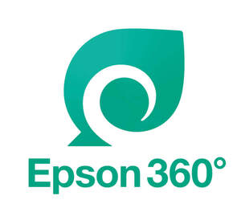
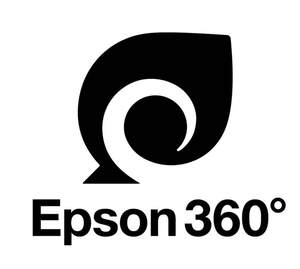

Trade Mark Journal No.2025/048 28 November 2025
UK00004296564 18 November 2025 (2,7,9,14,37,39,40)
Mark 1

Mark 2

- Class 2
- Ink, filled ink bottles and filled ink cartridges all for photocopiers, digital printers, computer printers, ink jet printers, large format ink jet printers, inkjet plotters, barcode printers, and multi-function digital printers incorporating copying and scanning and faxing capabilities; filled ink bottles in retail packaging; filled ink cartridges in retail packaging; toners and filled toner cartridges all for photocopiers, digital printers, computer printers, laser printers, large format printers, barcode printers, and multi-function digital printers incorporating copying and scanning and faxing capabilities; printing ink; ink bottles filled with ink; ink bottles for printers; dyes; pigments; paints; varnishes; metals in foil and powder form for painters, decorators, printers and artists.
- Class 7
- Printing machines; printheads for printing machines; parts and fittings for printing machines; inkjet printing machines for industrial purposes; digital printing machines for industrial purposes; digital label printing machines for industrial purposes; printing machines for textile; inkjet printing machines for textile; digital printing machines for textile; dyeing machines; machines for dyeing textiles; rotary printing presses; intaglio printing machines; silk screen printing machines; machines for textile processing; large format inkjet printing machines for commercial or industrial use; large format inkjet printing machines for textiles; industrial printing machines; industrial robots; robotic arms for industrial purposes; 3D printers; injection moulding machines; injection plastic moulding machines.
- Class 9
- Printers; inkjet printers; large format inkjet printers; computer printers; colour printers; digital printers; photo printers; laser printers; thermal printers; multi-function printers incorporating copying and scanning and faxing capabilities; receipt printers; label printers; ink cartridges, unfilled, for printers; high capacity ink cartridges, unfilled for inkjet printers; scanners [data processing equipment]; document scanners; image scanners; photo-copying machines; projectors; video projectors; LCD projectors; LCD video projectors; multimedia projectors; digital projectors; home theater projectors; home theater systems; projectors and their parts; computers; computer hardware; computer peripherals; computer software.
- Class 14
- Clocks and watches; wristwatches; component parts for clocks and watches.
- Class 37
- Installation, repair, maintenance and refurbishment of computer hardware and computer peripherals; installation, repair, maintenance and refurbishment of printers, scanners, projectors and computers; installation, repair, maintenance and refurbishment of audiovisual teaching apparatus; installation, repair, maintenance and refurbishment of electronic machines and apparatus; installation, repair, maintenance and refurbishment of industrial robots; installation, repair, maintenance and refurbishment of industrial robots for plastic moulding; installation, repair, maintenance and refurbishment of injection moulding machines; installation, repair, maintenance and refurbishment of 3D printers; installation, repair, maintenance and refurbishment of printing machines; installation, repair, maintenance and refurbishment of textile printing machines, textile dyeing machines and textile processing machines; installation, repair, maintenance and refurbishment of computer printers; installation, repair, maintenance and refurbishment of office machines and equipment; installation, repair, maintenance and refurbishment of telecommunications apparatus and instruments; repair, maintenance and refurbishment of clocks and watches; refilling of ink cartridges, toner cartridges, ink ribbons, ink bottles, ink tanks, ink for printers and printing machines, printing ink.
- Class 39
- Collection of used ink cartridges; transport and storage of used ink cartridges; collection, transport and storage of printers, scanners, projectors, computers, watches and clocks for recycling and refurbishment; collection, transport and storage of waste and trash; collection, transport and storage of recyclable goods; collection, transport and storage of recycling materials; collection, transport and storage of electronic scrap; collection, transport and delivery of goods; storage of goods; transport.
- Class 40
- Recycling of used ink cartridges; processing and recycling of waste and trash; upcycling [waste recycling]; processing of printing ink; processing of ink for computer printers.
Seiko Epson Kabushiki Kaisha (also trading as Seiko Epson Corporation)
Representative: Potter Clarkson LLP